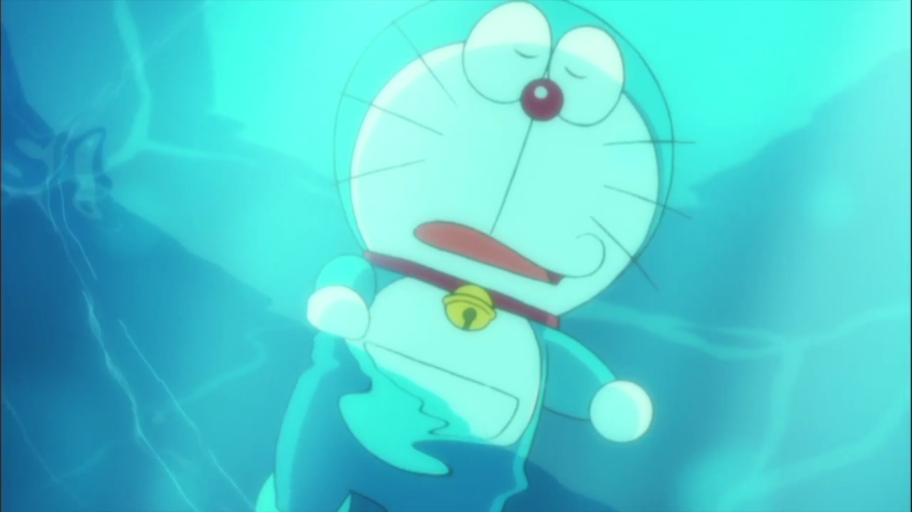

Doraemon Nobita no Nankyoku Kachikochi
march, 4, 2017

Chẳng cần phải dông dài giới thiệu gì nhiều bởi bản thân cái tên Doraemon đã quá quên thuộc với phần đông khán giả Việt. Và cũng vì sức hút to lớn của chú mèo máy này mà kể từ năm 1980 đến nay, mỗi năm người ta lại đều đặn đưa một câu chuyện về Doraemon, Nobita và nhóm bạn lên màn ảnh rộng.
Câu chuyện lần này có tựa đề là Nobita và chuyến thám hiểm Nam Cực Kachi Kochi. Cụm từ Kachi Kochi trong tiếng Nhật có nghĩa là “đông cứng”. Liệu đây có phải là lời cảnh báo về việc một nhân vật trong phim bị đông vĩnh viễn trong lớp băng của Nam Cực hay không? Câu trả lời là có đấy!

Chuyện là trong những ngày hè oi bức nóng nực, Nobita lại giở chứng lười học và bắt đầu bài ca than thở về cái nóng. Không còn cách nào khác, Doraemon đành phải chiều bạn mình bằng cách đưa cả hai đến một tảng băng trôi để “nghỉ mát” và ăn đá bào. Trong lúc chơi đùa, tình cờ Nobita phát hiện ra một hiện vật cổ xưa bị chôn vùi trong lớp băng. Máu phiêu lưu nổi lên khiến nhóm bạn quyết định thực hiện một chuyến thám hiểm đến Nam Cực, được cho là nơi đã tạo ra cổ vật này. Bên cạnh điều kiện khắc nghiệt nơi vùng cực, đón nhóm bạn còn là một tà thần cổ xưa đang chờ được thức tỉnh để nhấn chìm Trái Đất trong băng giá.
Vẫn những nét vẽ và tạo hình nhân vật gần gũi, quen thuộc với bao thế hệ khán giả: là Doraemon với chiếc miệng cong đáng yêu, là Nobita với đôi mắt hình “số 3” khi tháo kính ra hay Suneo cùng chiếc mỏ nhọn hoắt đặc trưng của mình… Những nhân vật mới xuất hiện trong phim, và thậm chí là cả những ngôi nhà, khu vườn, nền trời, đền thờ… cũng đều mang nét vẽ đặc trưng của cố tác giả Fujio F. Fujiko. Bên cạnh đó còn là những khung cảnh ngập tràn sắc màu mà chỉ có những bảo bối vi diệu của Doraemon mới có thể mang lại. Những nhà làm phim luôn tôn trọng tuyệt đối những di sản ban đầu của Doraemon, vì vậy nên dù sáng tạo, thêm thắt rất nhiều, họ vẫn dựa trên những viên gạch nền móng cũ, để không đánh mất cái chất Doraemon của phim. Do đó, người lớn khi xem chắc chắn sẽ bồi hồi xúc động nhớ về tuổi thơ, còn trẻ nhỏ sẽ vui cười thích thú. Một bộ phim dành cho mọi lứa tuổi theo đúng nghĩa.

Mỗi chuyến phiêu lưu của nhóm bạn đều ly kỳ, hấp dẫn và đem lại sự thích thú theo một cách rất riêng. Lần này cách dẫn dắt của phim cũng tương đối quen thuộc nhưng không hề nhàm chán. Đầu tiên là việc phát hiện ra một di vật dẫn đến chuyến thám hiểm đến Nam Cực, rồi, một cách chậm rãi, những bí ẩn về Trái Đất thời kỳ cổ xưa dần được hé lộ, cuối cùng tất cả phải cùng hợp sức chống lại tên tà thần để bảo vệ hành tinh này. Trong câu chuyện tưởng chừng như đơn giản ấy, biết bao điều kỳ thú đã xuất hiện trước mắt khán giả. Nào là thành phố cổ đồ dưới lòng Nam Cực, những người bạn mới cùng những loại thức ăn là kỳ đến từ một hành tình xa xăm trong vũ trụ, những sinh vật chưa bao giờ được biết đến, và sẽ là thiếu xót nếu không kể đến những con đom đóm băng tuyệt đẹp. Và trong cái thử thách khó khăn, hiểm nguy luôn chờ chực ấy, tình bạn lại một lần nữa là thứ giúp họ đồng lòng vượt qua tất cả.

Có thể chủ quan mà nhận xét rằng đây là một trong 3 phần phim về Doraemon có khâu âm thanh tuyệt nhất, mỗi lần bài insert song được cất lên là những cảm giác êm đềm, bình yên lại xuất hiện trong lòng người viết. Tuy nhiên phần lồng tiếng có hơi lấn át những âm thanh khác và làm giảm đi phần nào cái hay ở khâu âm thanh của bộ phim. Bên cạnh đó, có rất nhiều chi tiết ý nghĩa mà phim lồng tiếng không thể truyền tải hết được. Người viết đánh giá cao khả năng của các nghệ sĩ lồng tiếng Việt, nhưng vì lồng tiếng cho hoạt hình Nhật không hề là chuyện đơn giản, sẽ có rất nhiều vấn đề nảy sinh, vì vậy mà những hạn chế là không thể tránh khỏi. Tuy nhiên, đối với các em nhỏ thì việc đọc phụ đề vẫn là hơi khó, vì vậy phụ huynh vẫn nên chọn phần lồng tiếng cho các em.